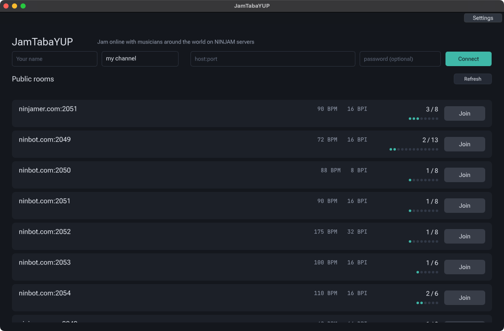
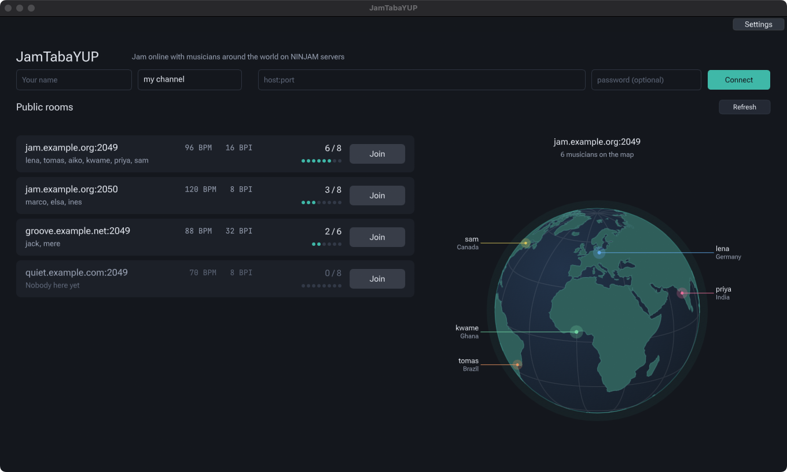
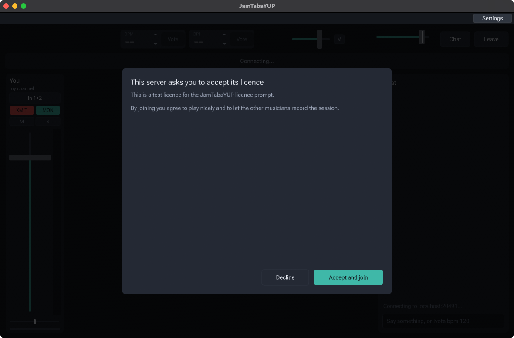

Your first jam¶
1. Name yourself¶
When JamTabaYUP is not in a room, it shows the server browser. Type your name
in the first field; the others see it next to your channel. Spaces, @ and :
are removed, because NINJAM servers don't allow them. The second field names
your channel, for example "guitar" or "vocals".

2. Pick a room¶
Public rooms lists the NINJAM servers that ninbot.com watches, refreshed every 30 seconds, busiest first. Each card shows:
- the server address,
- its current tempo (BPM) and interval length (BPI),
- how many people are in it, one dot per seat, and their names.
Click a card, or its Join button, to go in.
Who's there, on the globe¶
When the window is wide enough, a globe next to the list shows where the musicians in a room are. Point at a room to turn the globe toward its musicians: each gets a pin and a line out to their name and country. The globe turns by itself; drag it to spin it by hand.

The locations come from the public server list, which estimates each musician's area from their internet address; they're coarse, usually a city or region. Rooms whose list has no locations show none.
A room with nobody but its bot is a good place to try things out alone. A busy room is a good place to listen first: turn your XMIT off (see your channel) until you're ready to play along.
3. Or connect to a private server¶
Type the address as host:port (for example ninbot.com:2049, or a friend's
server), add a password if the server needs one, and click Connect or press
Enter. Without a password, JamTabaYUP logs in anonymously, which most public
servers allow.
4. Accept the server's licence¶
Many servers show a licence agreement first: the terms of playing there, usually that sessions may be recorded or streamed. Read it, then click Accept and join or Decline.

5. Play¶
You're in the jam room. Listen for a few intervals to get the form of the tune, then play along. What you play reaches the others one interval later, lined up with their beat.
To leave, click Leave. If the connection drops, you're back in the browser with the reason shown above the room list.